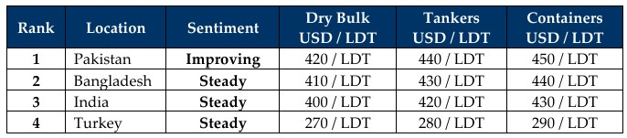

inWeekly Demolition Reports09/02/2026

The weekly roller coaster that has become the global marketplace went through its regular gravitational dropthis week, with the U.S. dollar taking the “cement-footed diving approach” in all ship-recycling destinations… except—you guessed it—Turkey!
The Baltic Exchange Dry Bulk Index fell 0.7% down to a two-week low, dragged by the Capesize index, which fell a massive 1.1% over the week. The Panamax index slipped a comparatively more acceptable 0.4%, while the Supramax index rose a modest 0.2% to even things out. Meanwhile, easing tensions between the U.S. and Iran alleviated concerns over potential supply disruptions erupting out of the Middle East (thanks, Donnie), resulting in oil falling below USD 62/barrel, yet it managed to crawl ahead and close Friday at USD 63.15/barrel.
As we slip past oil discussions and into the Indian sub-continent ship-recycling destinations, faint signs of life have certainly started to show (at least at the waterfronts) as we head further into February, after an inert start to the year produced some worrying reversals that seemed like the visiting mother-in-law who wasn’t planning on leaving (still feels like that way somehow). Local steel prices surged this week with all sub-continent destinations reporting major jumps across the week.
The shortage of recycling candidates meanwhile continues to flirt with a starving industry that is seeing stars and demand ramp up once again, following what has been a general theme over the years, accompanied by record-low sales due to continually firm freight markets on the back of some new global crisis that somehow never misses a beat to arrive for a paycheck. Older handy bulkers and LNGs have certainly been sold at the start of this year, and at some firming levels too, but tankers (for the most part) and containers have been absent over the last few years.
Bangladeshi elections are also on the horizon and the government has widened the local holiday period to ensure everyone has time to register their vote. All sub-continent recycling destinations meanwhile have had their own unique port positions to report for the week, with Chattogram leading the way once again. That can’t be happening, right? Turkey at the far end remains relatively quiet again, with no news of freshly proposed market units of late.
As Fun February breaks in, it’s looking set to be another quiet 2026, especially as geopolitical shocks continue to keep trading markets propped up —be it by men in suits or in traditional clothing.
For Week 06 of 2026, GMS Market Rankings / vessel indications are as below.

📄 Download PDF: Ship-recycling-market-insight-Week-06-02-06-2026-Search_of_Life.pdfSource: GMS,Inc.https://www.gmsinc.net/gms_new/index.php/web